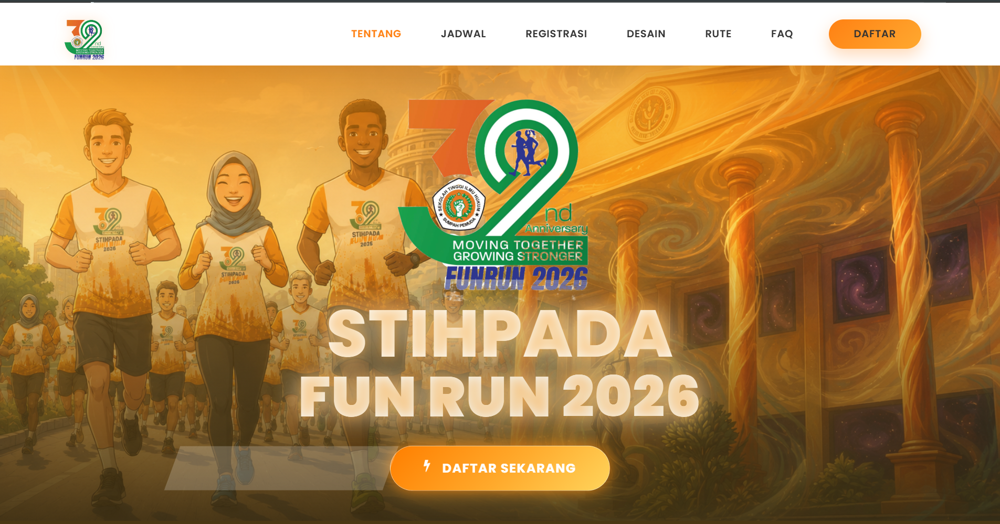
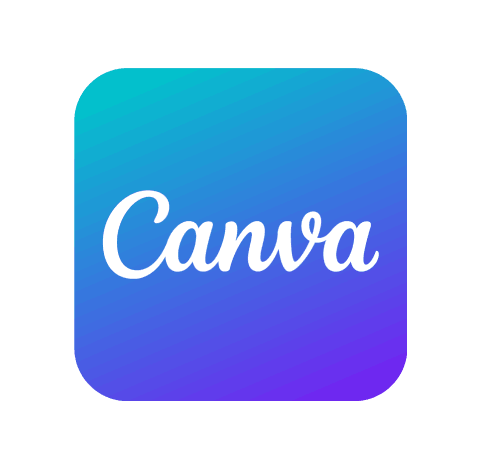
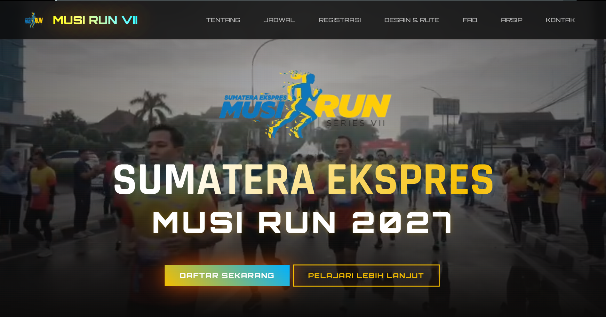
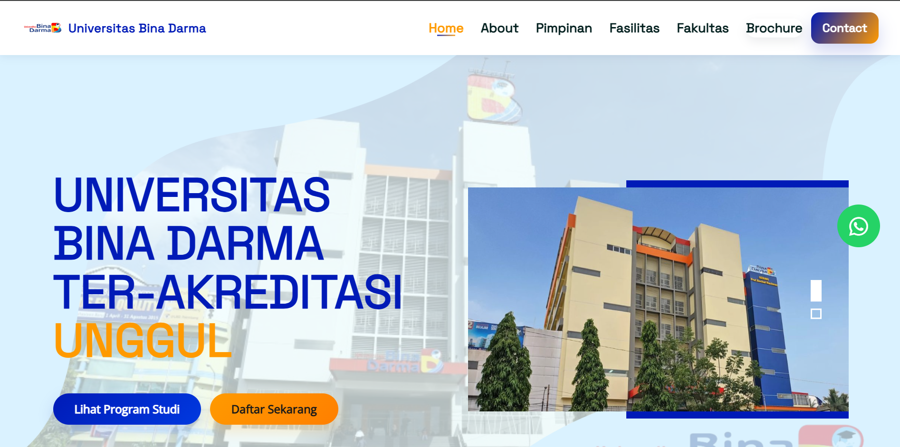
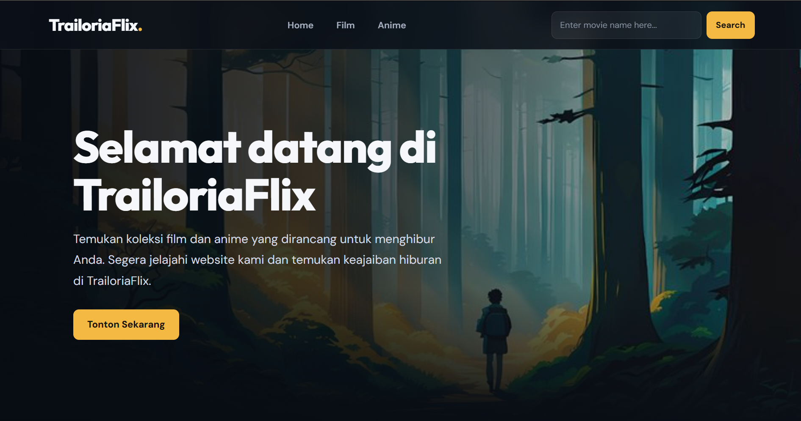

01Projek freelance
Website Event STIHPADA Fun Run 2026
Website resmi STIHPADA Fun Run 2026 yang menghadirkan informasi lomba, jadwal, kategori, dan pendaftaran bagi para peserta.
Lihat ProjectSaya Ilham, web developer yang mengubah ide menjadi website modern yang cepat, mudah digunakan, dan meninggalkan kesan.
Saya Ilham, junior web developer dengan pengalaman lebih dari satu tahun membangun antarmuka yang bersih, responsif, dan nyaman digunakan. Saya memadukan perhatian pada detail desain dengan kode yang rapi dan terstruktur.
Dengan HTML, CSS, JavaScript, dan framework Laravel, saya senang mengubah ide menjadi pengalaman digital yang bermanfaat. Bagi saya, setiap proyek adalah kesempatan untuk terus belajar, bereksperimen, dan menciptakan karya yang berdampak.
Dengan teknologi yang tepat, saya mengubah ide menjadi produk digital yang menarik, nyaman digunakan, dan siap berkembang.
 HTMLStructure
HTMLStructure CSSStyling
CSSStyling JavaScriptInteraction
JavaScriptInteraction GitHubVersioning
GitHubVersioning FigmaDesign
FigmaDesign
CanvaVisualsKemampuan interpersonal dan aplikasi produktivitas yang saya gunakan.
Jelajahi karya pilihan saya dari proyek freelance hingga eksperimen kreatif yang dirancang dengan perhatian pada detail dan pengalaman pengguna.

01Website resmi STIHPADA Fun Run 2026 yang menghadirkan informasi lomba, jadwal, kategori, dan pendaftaran bagi para peserta.
Lihat Project
02Website Musi Run 2027 yang memudahkan pengunjung mengenal event, melihat informasi lomba, dan menemukan panduan pendaftaran.
Lihat Project
03Website informasi dan promosi Universitas Bina Darma yang memperkenalkan fakultas, program studi, serta jalur pendaftaran bagi calon mahasiswa.
Lihat Project
04Website hiburan untuk menjelajahi pilihan film dan anime, lengkap dengan tampilan yang mengajak pengunjung menemukan tontonan favorit.
Lihat ProjectKumpulan sertifikat dan pencapaian profesional saya.